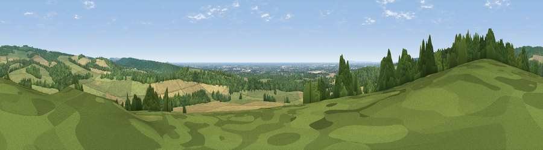

Viewpoint near Slindon
#11681 in England · top 26% of its area beats it · near Slindon · footpathWhere it is
The exact computed spot (SU 95525 09675). Click the marker for map links.
Public access: a public right of way passes within 55 m of this spot. Computed from Natural England's CRoW access layer and OpenStreetMap rights of way — not the legal definitive map. Always verify locally.
The view, rendered

A 360° render of this exact spot computed from the terrain model, tree cover and land cover — summer colours, afternoon light, calibrated against photographs of famous viewpoints. Real trees, hedges and buildings will differ in detail.
The panorama
Grey silhouette: terrain skyline in each direction (720 bearings, Earth curvature and refraction included). Dashed green: skyline with trees (+15 m) and buildings (+8 m) as obstacles. Blue strip: how far the ground is visible on each bearing.
Where the view opens
Wedge length = distance to the farthest visible ground on that bearing (vegetation-aware). Rings at 10, 25 and 50 km.
What fills the view
36% grassland · 36% woodland · 24% cropland · 2% water · 2% built-up
Angular shares of the visible panorama (visual magnitude), not map area. Landscape diversity 0.54 (0–1 Shannon).
Key numbers
More beautiful places nearby
The staircase of upgrades: each row has a higher view potential than everything closer. Driving times are estimates from straight-line distance, calibrated against real road routing — check an actual route before setting out.
| Place | Direction | Drive | Score |
|---|---|---|---|
| Viewpoint near Slindon | SE · 1 km | ~4 min | 68.9 |
| Viewpoint near Bignor | N · 3 km | ~8 min | 82.1 |
| Glatting Beacon | NNE · 4 km | ~8 min | 84.3 |
| Bignor Hill | NE · 4 km | ~10 min | 84.4 |
| Linch Down | NW · 13 km | ~24 min | 85.2 |
| Beacon Hill | WNW · 17 km | ~30 min | 85.8 |
| Chanctonbury Ring | E · 19 km | ~32 min | 87.0 |
| Viewpoint near St. Lawrence | SW · 52 km | ~74 min | 88.2 |
50.87868, -0.64358 · source: screening · position refined by local search. Computed location — check access rights before visiting.